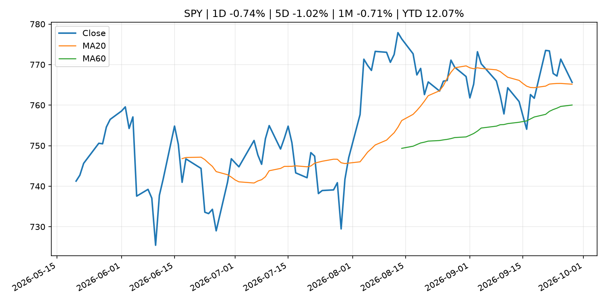
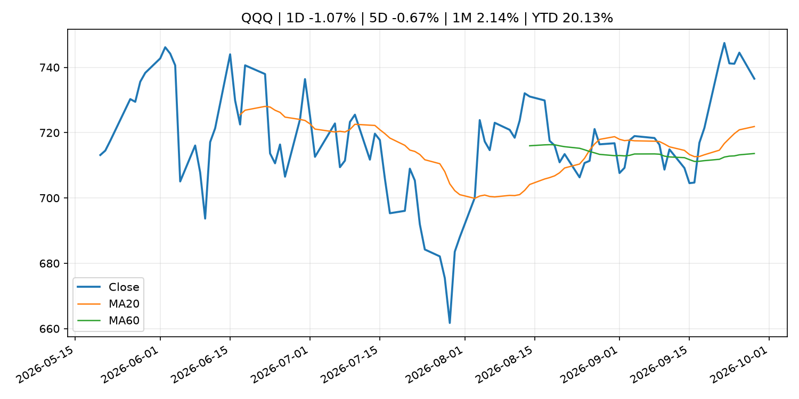
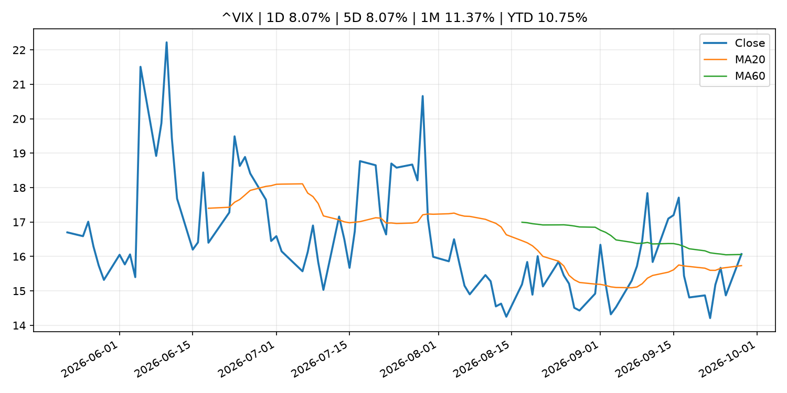
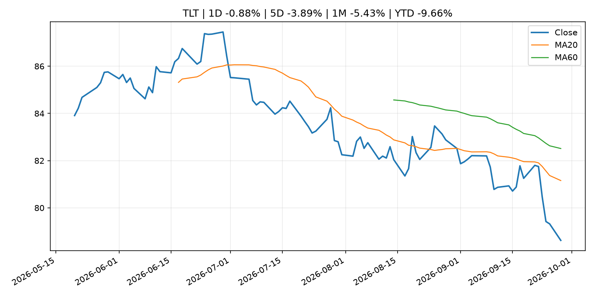
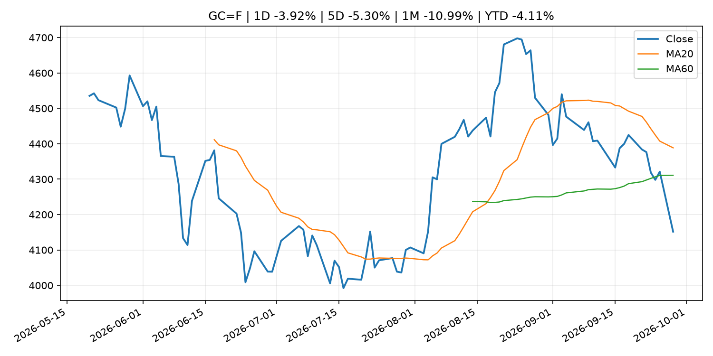
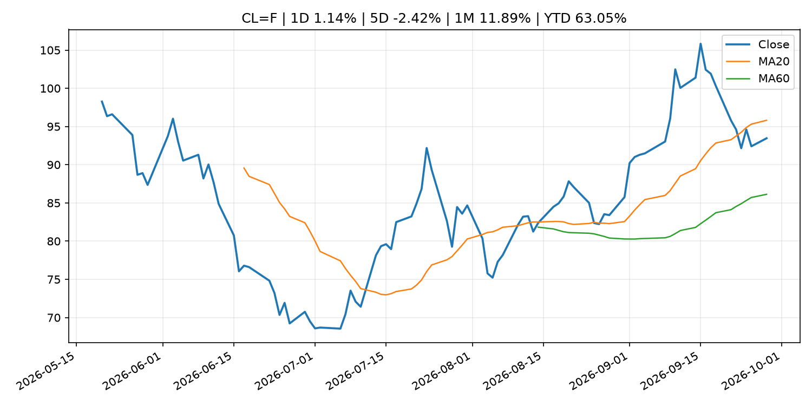
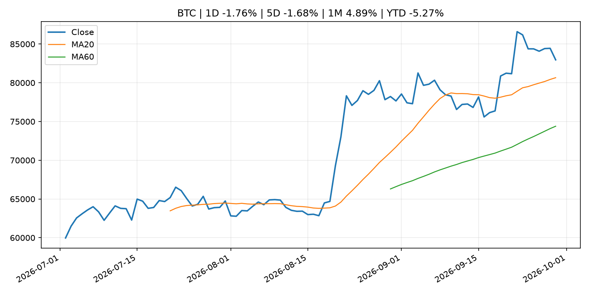
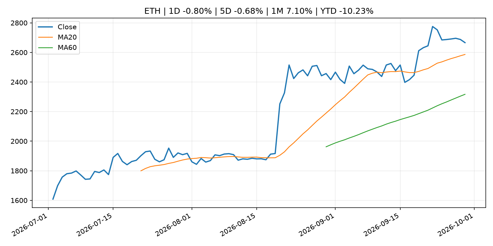
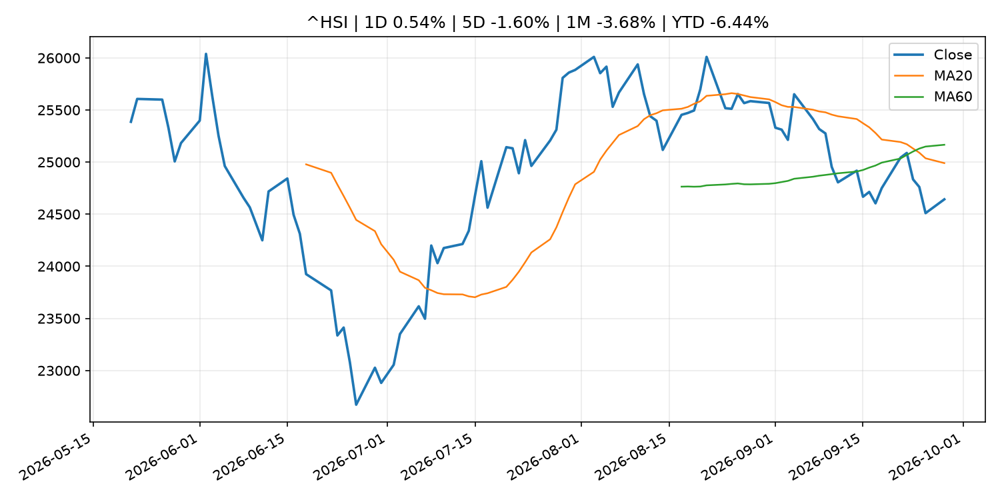

Global Macro Morning Briefing - 2026-09-29
Not financial advice / 非投资建议。
0. 今日总览
- 市场状态：mixed。市场信号不足，暂不判断明确状态。 但存在信号冲突，需要降低单一叙事置信度。
- 今日三大主线：
- geopolitical_risk: SEC Charges Registered Investment Adviser Zoe Financial for Failure to Disclose Conflict of Interest
- 一句话结论：今日晨报重点关注：地缘风险可能推升避险需求、能源价格和市场波动率。；这条信息暂未匹配到重大宏观、政策或市场事件，更适合作为背景跟踪。。跨资产方面，SPY 1D -0.74%；QQQ 1D -1.07%；^VIX 1D 8.07%；TLT 1D -0.88%；GC=F 1D -3.92%；CL=F 1D 1.14%；BTC 1D -1.76%；ETH 1D -0.80%；市场信号不足，暂不判断明确状态。 但存在信号冲突，需要降低单一叙事置信度。政策、通胀、利率、美元、美债、能源和加密监管仍是主要观察线索。所有结论仅基于公开数据与短摘要整理，不构成投资建议。
1. 隔夜跨资产市场
- 美股：SPY 1D -0.74%，QQQ 1D -1.07%，整体趋势需结合 VIX 和利率确认。
- 美债/美元：TLT 1D -0.88%，美元指数 1D 0.24%，是判断折现率压力的核心线索。
- 黄金/原油：黄金 1D -3.92%，原油 1D 1.14%，用于观察避险、通胀和地缘风险。
- 加密：BTC 1D -1.76%，ETH 1D -0.80%，关注是否独立于纳指走出加密自身行情。
- 港股/A股：恒生 1D 0.54%，沪深300/上证 1D n/a，重点看中国政策预期与人民币线索。
- 风险观察：关注后续数据是否确认当前跨资产信号。
US_EQUITY
| symbol | latest close | 1D | 5D | 1M | YTD | trend |
|---|---|---|---|---|---|---|
| SPY | 765.61 | -0.74% | -1.02% | -0.71% | 12.07% | uptrend |
| QQQ | 736.53 | -1.07% | -0.67% | 2.14% | 20.13% | uptrend |
| DIA | 514.02 | -0.67% | -1.11% | -3.96% | 6.28% | strong_downtrend |
| IWM | 280.02 | -0.69% | -1.95% | -6.60% | 12.56% | strong_downtrend |
| VTI | 375.84 | -1.03% | -1.38% | -1.26% | 11.75% | range_bound |
US_MACRO_MARKET
| symbol | latest close | 1D | 5D | 1M | YTD | trend |
|---|---|---|---|---|---|---|
| ^VIX | 16.07 | 8.07% | 8.07% | 11.37% | 10.75% | range_bound |
| DX-Y.NYB | 101.21 | 0.24% | 0.78% | 2.07% | 2.83% | range_bound |
| TLT | 78.62 | -0.88% | -3.89% | -5.43% | -9.66% | strong_downtrend |
| IEF | 89.53 | -0.52% | -1.78% | -3.97% | -6.82% | strong_downtrend |
COMMODITIES
| symbol | latest close | 1D | 5D | 1M | YTD | trend |
|---|---|---|---|---|---|---|
| GC=F | 4,151.60 | -3.92% | -5.30% | -10.99% | -4.11% | range_bound |
| SI=F | 60.97 | -5.09% | -7.37% | -12.18% | -13.58% | range_bound |
| CL=F | 93.46 | 1.14% | -2.42% | 11.89% | 63.05% | range_bound |
| BZ=F | 98.89 | -5.21% | -1.45% | 10.25% | 62.78% | range_bound |
| NG=F | 3.13 | -1.97% | 10.47% | 7.77% | -13.41% | strong_uptrend |
| HG=F | 6.62 | -1.15% | -1.02% | 0.48% | 17.35% | uptrend |
HK_MARKET
| symbol | latest close | 1D | 5D | 1M | YTD | trend |
|---|---|---|---|---|---|---|
| ^HSI | 24,642.51 | 0.54% | -1.60% | -3.68% | -6.44% | strong_downtrend |
| 0700.HK | 432.00 | -1.77% | -4.34% | -4.64% | -30.66% | downtrend |
| 9988.HK | 105.00 | -2.51% | -8.54% | -8.06% | -29.53% | strong_downtrend |
| 3690.HK | 72.80 | 1.25% | -0.55% | -7.73% | -30.40% | strong_downtrend |
| 1810.HK | 25.66 | -0.77% | -5.66% | -7.10% | -36.30% | strong_downtrend |
| 1211.HK | 77.70 | 0.00% | -4.49% | -10.89% | -21.32% | strong_downtrend |
CRYPTO
| symbol | latest close | 1D | 5D | 1M | YTD | trend |
|---|---|---|---|---|---|---|
| BTC | 82,960.94 | -1.76% | -1.68% | 4.89% | -5.27% | strong_uptrend |
| ETH | 2,666.15 | -0.80% | -0.68% | 7.10% | -10.23% | strong_uptrend |
| SOLANA | 117.19 | -3.91% | 1.91% | 12.93% | -5.89% | strong_uptrend |
| BINANCECOIN | 757.90 | -2.65% | -1.22% | 2.46% | -12.15% | uptrend |
| RIPPLE | 1.48 | -2.51% | -1.51% | 5.90% | -19.67% | uptrend |
2. 今日最重要的 10 条新闻
1. SEC Charges Registered Investment Adviser Zoe Financial for Failure to Disclose Conflict of Interest
- 来源：SEC Press Releases
- 时间：2026-09-28T13:46:30-04:00
- 地区：US
- 事件类型：geopolitical_risk
- 重要性层级：Tier 1
- 一句话摘要：The Securities and Exchange Commission today announced settled charges against New York-based investment adviser Zoe Financial Inc. for failing to fully and fairly disclose material facts concerning conflicts of interest to its clients and prospective…
- 为什么重要：地缘风险可能推升避险需求、能源价格和市场波动率。
- 可能影响：主要影响 BTC，方向为 mixed，强度 high；加密监管或 ETF 进展会改变 BTC 的资金流和风险溢价。
- 资产：BTC 方向：mixed 强度：high 原因：加密监管或 ETF 进展会改变 BTC 的资金流和风险溢价。
- 资产：ETH 方向：mixed 强度：high 原因：监管框架会影响 ETH 产品化和机构参与度。
- 资产：COIN 方向：mixed 强度：medium 原因：监管清晰度和执法风险会影响交易平台估值。
- 资产：crypto market 方向：mixed 强度：high 原因：信息影响整个加密市场结构，但方向取决于细节。
- 原文链接：https://www.sec.gov/newsroom/press-releases/2026-94-sec-charges-registered-investment-adviser-zoe-financial-failure-disclose-conflict-interest
2. ‘I’m never selling’: I’m 47 and buy bitcoin with every dollar I earn. Am I crazy?
- 来源：MarketWatch Top Stories
- 时间：2026-09-28T22:35:00+00:00
- 地区：US
- 事件类型：other
- 重要性层级：Tier 3
- 一句话摘要：“When my paycheck lands, it takes a detour through bitcoin.”
- 为什么重要：这条信息暂未匹配到重大宏观、政策或市场事件，更适合作为背景跟踪。
- 可能影响：更偏背景信息，短期市场影响可能有限。
- 资产：暂无明确资产映射
- 方向：unknown
- 强度：low
- 原因：公开信息不足以判断方向。
- 原文链接：https://www.marketwatch.com/story/im-never-selling-im-47-and-buy-bitcoin-with-every-dollar-i-earn-am-i-crazy-364d2a64?mod=mw_rss_topstories
3. Christine Lagarde: Hearing of the Committee on Economic and Monetary Affairs of the European Parliament
- 来源：ECB Press Releases
- 时间：2026-09-28T15:30:00+02:00
- 地区：EU
- 事件类型：other
- 重要性层级：Tier 3
- 一句话摘要：Christine Lagarde: Hearing of the Committee on Economic and Monetary Affairs of the European Parliament
- 为什么重要：这条信息暂未匹配到重大宏观、政策或市场事件，更适合作为背景跟踪。
- 可能影响：更偏背景信息，短期市场影响可能有限。
- 资产：暂无明确资产映射
- 方向：unknown
- 强度：low
- 原因：公开信息不足以判断方向。
- 原文链接：https://www.ecb.europa.eu//press/key/date/2026/html/ecb.sp260928~a875675544.en.html
3. 政策与央行观察
暂无可靠数据。
- 为什么重要：没有可靠新闻时，不应为了填充版面编造市场解释。
4. 市场异动与图表
- SPY 下跌 -0.74%
- QQQ 下跌 -1.07%
- VIX 上涨 8.07%
- TLT 下跌 -0.88%
- Gold 下跌 -3.92%
- Oil 上涨 1.14%
信号矛盾
- 股债同时承压，可能是利率或流动性冲击而非传统避险。
SPY

QQQ

^VIX

TLT

GC=F

CL=F

BTC

ETH

^HSI

5. 华尔街与机构公开观点
- 暂无可靠公开观点。
6. 今日重点关注
- 经济数据：经济数据：暂无可靠公开日历数据；如配置经济日历源后可自动填充。
- 央行讲话：央行讲话：暂无可靠公开日历数据；重点跟踪 Fed、ECB、BoJ、PBOC 官网 RSS。
- 财报：财报：暂无可靠数据。
- 政策事件：政策事件：暂无可靠数据。
- 风险提醒：风险提醒：关注数据源失败项、突发地缘风险、利率和美元的二阶反应。
7. 英文金融表达与宏观概念
- market structure：市场结构，指交易、托管、清算、ETF、监管等制度安排。 例句：Crypto market structure rules can affect institutional participation.
- inflation expectations：通胀预期，指家庭、企业或市场对未来通胀的预估。 例句：Inflation expectations can shape wage bargaining and bond yields.
- real yield：实际收益率，名义利率扣除通胀预期后的收益率。 例句：Gold often reacts more to real yields than nominal yields.
- terminal rate：终端利率，市场预期本轮加息周期的最高政策利率。 例句：A higher terminal rate can pressure growth stocks.
- soft landing：软着陆，指通胀回落而经济避免明显衰退。 例句：Markets often rally when data support a soft landing.
- risk-off：避险模式，资金偏向美元、国债、黄金等防御资产。 例句：A geopolitical shock can push markets into risk-off mode.
8. 背景材料
- ‘I’m never selling’: I’m 47 and buy bitcoin with every dollar I earn. Am I crazy?（MarketWatch Top Stories，other）：“When my paycheck lands, it takes a detour through bitcoin.”
- Goldman Sachs brings $100 billion Treasury fund into crypto’s institutional plumbing（CoinDesk，other）：Goldman Sachs brings $100 billion Treasury fund into crypto’s institutional plumbing
- The restaking gold rush is over, and top protocols are barely making a profit（CoinDesk，other）：The restaking gold rush is over, and top protocols are barely making a profit
- Christine Lagarde: Hearing of the Committee on Economic and Monetary Affairs of the European Parliament（ECB Press Releases，other）：Christine Lagarde: Hearing of the Committee on Economic and Monetary Affairs of the European Parliament
- Chainlink launches new version of its crypto bridge tech 'CCIP' to give apps more control over their security（CoinDesk，other）：Chainlink launches new version of its crypto bridge tech 'CCIP' to give apps more control over their security
- THORChain rejects Bitget request to block hacker as $6 million moves to bitcoin（CoinDesk，other）：THORChain rejects Bitget request to block hacker as $6 million moves to bitcoin
- Bitcoin falls to $83,000 while altcoins unwind Friday's rally（CoinDesk，other）：Bitcoin falls to $83,000 while altcoins unwind Friday's rally
- Live updates: Bitcoin remains under pressure as Iran denies report of peace progress（CoinDesk，other）：Live updates: Bitcoin remains under pressure as Iran denies report of peace progress
- Caution builds in the bitcoin market even as prices stay well above summer lows（CoinDesk，other）：Caution builds in the bitcoin market even as prices stay well above summer lows
- U.S., China to lower tariffs on $60 billion of goods. Here's what qualifies（CNBC Economy，other）：The lists included U.S. imports of toys, sports equipment and Christmas decorations, while U.S. farm products appeared on the list of Chinese imports.
- Solana ETFs draw record $188 million in a week as Bitwise takes two-thirds of inflows（CoinDesk，other）：Solana ETFs draw record $188 million in a week as Bitwise takes two-thirds of inflows
- Bitcoin, Nasdaq futures decline as Trump won’t rule out more Iran strikes（CoinDesk，other）：Bitcoin, Nasdaq futures decline as Trump won’t rule out more Iran strikes
- Minutes of the Monetary Policy Meeting on July 30 and 31, 2026（Bank of Japan Announcements，other）：Minutes of the Monetary Policy Meeting on July 30 and 31, 2026
- Services Producer Price Index (Aug.)（Bank of Japan Announcements，other）：Services Producer Price Index (Aug.)
- Debt-hungry AI companies face increased risk as bond yields spike（CNBC Economy，other）：The AI infrastructure buildout shows no sign of slowing, but the surge in Treasury yields means it's at least going to cost more.
9. 数据源、失败项与免责声明
- 采集时间：2026-09-29T01:29:14
- 数据源：公开 RSS、Yahoo Finance、CoinGecko、AKShare、FRED、SEC data.sec.gov，以及用户自有 inputs/reports 文件。
- 合规说明：不绕过 WSJ、Bloomberg、FT、Reuters 等付费墙；对付费媒体只使用公开 RSS 标题、摘要、链接和发布时间。
- 免责声明：Not financial advice / 非投资建议。本项目仅供个人学习、研究和信息整理，不构成投资建议、交易建议或任何收益承诺。
- 失败或跳过的数据源：
- crypto data failed coin=dogecoin
- China market data failed symbol=上证指数: empty dataframe
- China market data failed symbol=深证成指: empty dataframe
- China market data failed symbol=创业板指: empty dataframe
- China market data failed symbol=沪深300: empty dataframe
- China market data failed symbol=中证500: empty dataframe
- China market data failed symbol=科创50: empty dataframe
- FRED_API_KEY not set; skipping FRED macro series
- SEC failed cik=0000320193
- SEC failed cik=0000789019
- SEC failed cik=0001045810
- SEC failed cik=0001318605
- SEC failed cik=0001577552